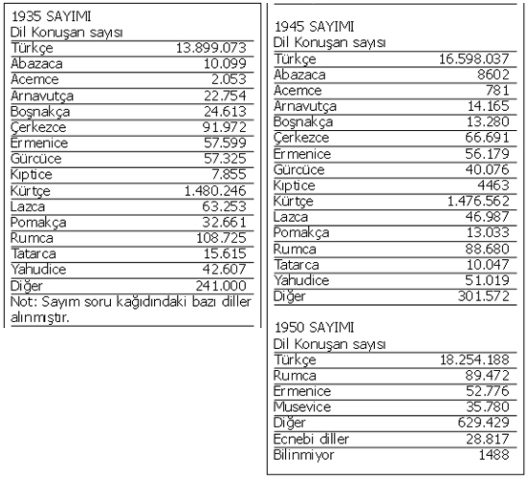

Türk Tarih Kurumu (TTK) Başkanı Prof. Dr. Yusuf Halaçoğlu’nun “Elimde Ermeni dönmelerinin listesi var” sözleri büyük tartışma yarattı. Bu iddiayı kanıtlayan resmi bir belge ortaya çıkartılmış değil. Buna rağmen TTK Başkanı hiçbir şekilde geri adım atmayarak ısrarla devletin “kapı kapı dolaşıp bu kişileri tek tek tespit ettiğini” savunuyor. Tartışmalar kamuoyunda ciddi bir kuşku yaratmadı değil. Hâlâ hükümetten de diğer resmi kurumlardan da Halaçoğlu’nun bahsettiği listeyi yalanlayan veya doğrulayan açıklama gelmemiş olması akıllardaki soru işaretlerini çoğaltıyor kuşkusuz.
‘Nüfus istatistikleri tümüyle açıklanmalıydı’
Konuya dair Referans’a açıklama yapan Halaçoğlu, “Elinizde bulunduğunu söylediğiniz belgeler devlet arşivine mi ait” sorusuna net yanıt vermekten kaçındı. Ancak tezlerini kanıtlayabilecek bazı olguların geçmişte yapılmış nüfus sayım sonuçlarından da çıkartılabileceğini söyledi. Halaçoğlu’nun işaret ettiği şey, en son 1975 yılındaki nüfus sayımı kâğıtlarında yer alan “Hangi anadili konuşuyorsunuz?” sorusuna verilen yanıtlar. Bunların bir gösterge olabileceğini ileri sürüyor Halaçoğlu. “Peki bu sayım sonuçları tam olarak açıklandı mı” sorusuna ise yanıtı net: “Açıklanması gerekirdi.” Türkiye İstatistik Kurumu’nun (TÜİK) belgelerine göre 1980 yılındaki sayıma kadar bu soru anketlerde yer almasına rağmen sonuçların 1975 yılından sonra hiç açıklanmamış olması dikkat çekici.
Türkiye ilk nüfus sayımını 1927 yılında yaşadı. “Anadili nedir” ve “Anadilinden başka hangi dili konuşmasını bilir?” soruları ise ilk kez 1935’teki sayım kâğıdına konuldu. Ve bu yıldan itibaren nüfus sayımının her 5 yılda bir düzenli olarak yapılacağı kanunla karara bağlandı. Ancak Türkiye düzenli nüfus istatistiklerine geçtiği 1935 yılında tuhaf bir sayıma daha tanık olmuştu. Resmi sayımın 1935 yılında yapılacağına ilişkin 2465 No’lu Umumi Nüfus Sayımı Hakkında Kanun’un 29 Mayıs 1934’te TBMM’de kabul edilmesinden bir ay sonra, 2576 No’lu Gizli Nüfusların Yazımı Hakkında Kanun adlı özel bir düzenleme de Meclis’ten geçerek 15 Temmuz günü yürürlüğe girdi. Böylece aynı yıl “umumi” ve “gizli” adıyla çifte nüfus sayımı yapıldı. Nitekim “gizli” ibareli nüfus sayımı haziran 1935’e kadar devam ederken, “umumi” nüfus sayımı ekim 1935’te gerçekleştirildi.
Bilgi verene ödül, sayılmayana ceza
Meclis tutanaklarında yer alan ve 12 maddeden oluşan gizli nüfus sayımı kanunundaki bazı düzenlemeler şöyleydi: Her reis evindeki veya emri altındaki gizli nüfusu 1.5 ay içinde bildirecek (madde 1), muhtar ve belediyeler gizli nüfusları kaydederek kayıt defterlerini düzenleyecek ve ilgili makama gönderecek (madde 2), bilgiyi doğru vermeyenler 1-10 lira cezalandırılacak (madde 4), mükerrer nüfus yazımında ceza iki misli artırılacak (madde 5), idare heyetlerinin cezaları kati olup tahsil edilecek (madde 6), gizli nüfus yazılacak ve defterler buna göre tanzim edilecek (madde 7), kanunun yürürlüğe girmesinden itibaren 3 ay içinde gizli nüfus hakkında bilgi veren mükafatlandırılacak (madde 8).
Başvekil İsmet İnönü imzasıyla 3 Temmuz 1934 günü TBMM Başkanlığı’na sunulan lahiyada kanun, “Nüfus kütüğüne kaydolmamış, ölmüş ya da kaybolduğu halde kütükten silinmemiş olanların belirlenmesi” gerekçelerine dayandırıldı. Oysa 1935 yılında yapılacak resmi genel sayım da zaten nüfusun tam olarak tespit edilmesi ve kayıt altına alınması amacını güdüyordu.
Sayım kanun çıkmadan 1 yıl önce başladı
Bunun yanında TBMM tutanaklarında dikkat çekici bir başka nokta daha var. İnönü’nün sunduğu lahiyadan iki gün sonra, 5 Temmuz günü, TBMM Başkanlığı’na sunulan Dahiliye Encümeni Mazbatası’na ekli listenin üzerinde yer alan tarihler ile kanunun resmen yürürlüğe girdiği tarih arasında fark bulunuyor. Mazbatada 1933 kasım ile 1934 mayıs döneminde kaydedilen yazılı ve gizli nüfus hakkında bilgilere yer verilmiş. Dolayısıyla “gizli” nüfusun tespitine ilişkin sayım yapılması için kanun 1934’te çıkartılmasına karşın, 1933’te de gizli sayım herhangi bir yasal dayanak olmaksızın yapılmış. Kanunun yürürlük süresi ise 1 Haziran 1935 tarihine kadar uzatılmış. Dolayısıyla 1933’ten başlayarak 1935’teki resmi nüfus sayımına kadar süren “gizli bir nüfus istatistiğinin” devlet arşivlerinde yer alması gerekiyor.
Prof. Dr. Halaçoğlu, elinde bulunduğunu savunduğu “dönmeler listesi”nin kaynağının 1933-35 yılları arasında yapılmış bu “gizli sayım” olup olmadığına dair soruyu kesin bir dille reddetti. Hatta şimdiye kadar devletin arşivlerinden yararlandığını söylemesine rağmen, “Benim kaynaklarım başka. Yerli yabancı uzmanlar ile kişisel araştırmalarımdan oluşuyor” dedi. Ve “gizli sayımın” İsmet İnönü’nün lahiyasında söylenen gerekçelerden dolayı yapıldığını anlattı. Ancak resmi bir nüfus sayımı yapılacakken bir yılı kanunsuz biçimde olmak üzere neden iki yıl boyunca ayrı bir sayımın yapıldığı sorusunu ise “Konunun ayrıntılarını bilmiyorum” diyerek yanıtladı.
Bu tuhaf sayımın istatistiki sonuçları konusunda genel rakamlar dışında herhangi bir ayrıntı yok. Konuyu danıştığımız Toplumsal Tarih dergisi yazarları ile yakın tarih üzerine çalışan Mehmet Ali Kılıçbay, Rıfat Ballı, İsmail Beşikçi gibi tarihçiler ise çifte nüfus sayımı ve ona dair kanun hakkında bir bilgilerinin olmadığını ifade ettiler.

Anadillere göre nüfus dağılımı artık yapılmıyor
Türkiye’de 1935 yılından itibaren nüfus sayımlarında kullanılan anketlerde etnik kökene dair bilgilerin yer aldığı sorulara da yer verilmeye başlandı. Özellikle dil konusunda ayrıntılı istatistikler tutuldu. Anadil, ikinci konuştuğu dil, başkaca bildiği diller, dile ve dine göre dağılımlar gibi istatistikler 1975’e kadar da tamamen açıklanıyordu. 1990 yılına kadar bu sorular sorulmasına rağmen, kamuoyuna açıklanmadı. 1990’dan itibaren de nüfus anketlerinden sorular çıkartıldı.
Bahadır Özgür /
Referans Gazetesi